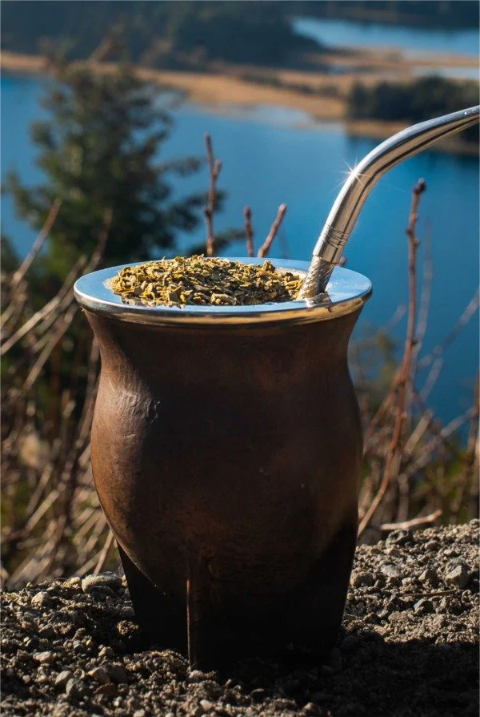
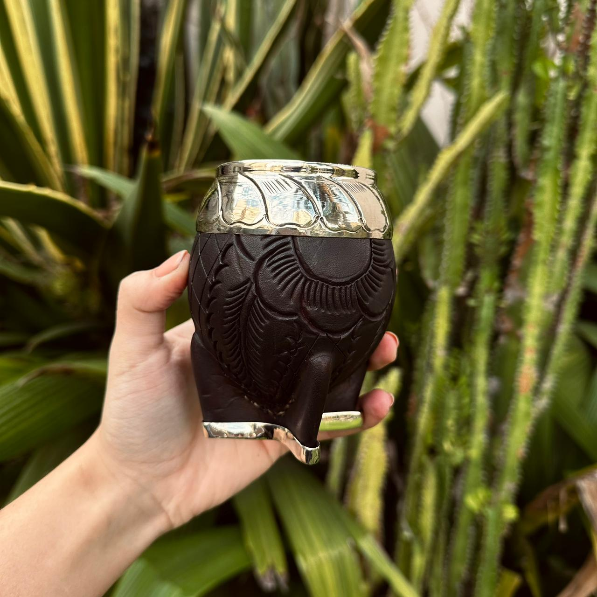
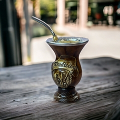
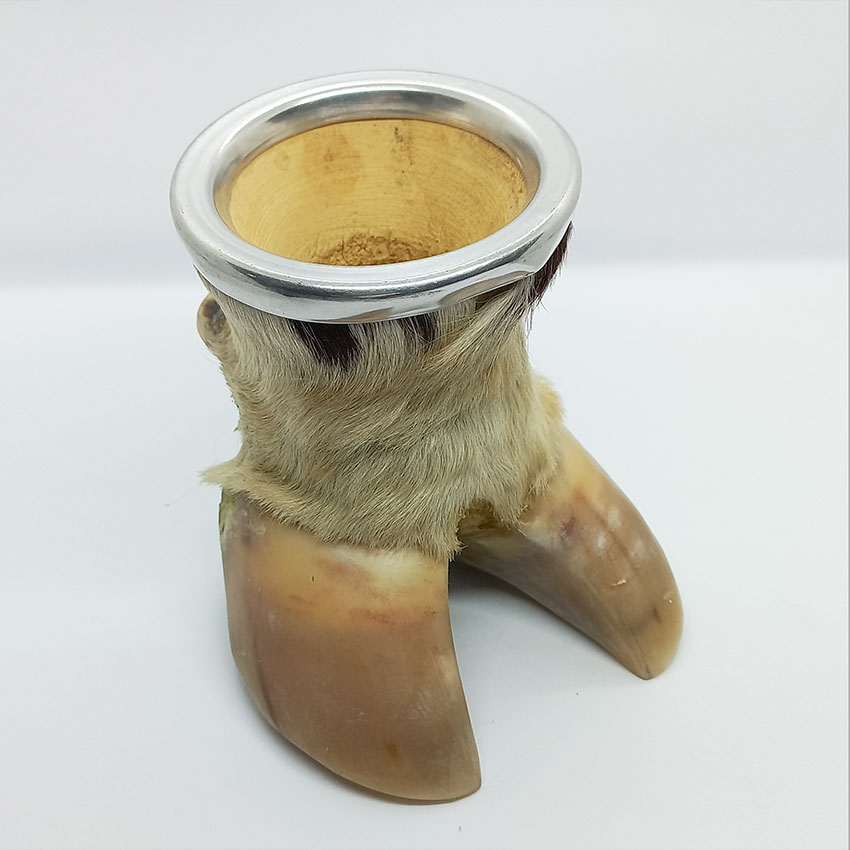
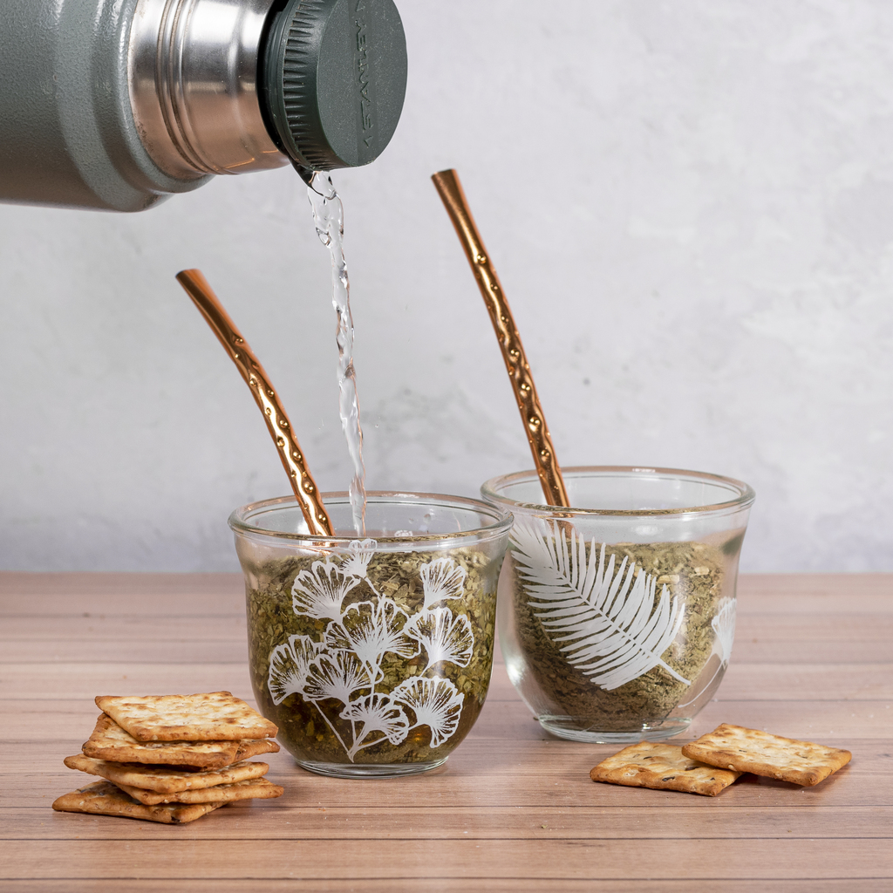

Inicio
menu de mates
menu de yerbas
nosotras
novedades
Menu de nuestro emprendimiento
Podran encontrar las mejores opciones de mates
Nos especializamos en vender mates de calidad y tenemos mucha variedad
Tipos de mates: imperial, camionero, torpedo, porongo, pezuña, vidrio




